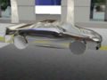

Panda3D Manual: Chrome car.jpg
{kind=link}
{kind=link}
{kind=link}

No higher resolution available.
Chrome_car.jpg (400 × 300 pixels, file size: 35 KB, MIME type: image/jpeg)
This image was generated with the following program:
from direct.directbase.DirectStart import *
from pandac.PandaModules import *
base.setBackgroundColor(1, 1, 1, 1)
car = loader.loadModel('bvw-f2004--carnsx/carnsx.egg')
tex = loader.loadTexture('streetscene_env.png')
tex.setMinfilter(Texture.FTLinearMipmapLinear)
car.setTexGen(TextureStage.getDefault(), TexGenAttrib.MEyeSphereMap)
car.setTexture(tex, 1)
car.reparentTo(render)
car.setZ(-2)
car.setH(90)
scene = loader.loadModel('bvw-f2004--streetscene/street-scene.egg')
scene.reparentTo(render)
scene.setZ(-2)
base.disableMouse()
camera.setHpr(17, -15, 0)
camera.setPos(2.5, -6.6, 0.2)
base.graphicsEngine.renderFrame()
base.screenshot('chrome_car.png', defaultFilename = 0)
car.clearTexGen()
car.clearTexture()
body = car.find('**/body')
body.findAllMatches('**/FL_wheel*').reparentTo(car)
tex = loader.loadTexture('streetscene_env_dark.png')
ts = TextureStage('env')
ts.setMode(TextureStage.MAdd)
body.setTexGen(ts, TexGenAttrib.MEyeSphereMap)
body.setTexture(ts, tex)
base.graphicsEngine.renderFrame()
base.screenshot('shiny_car.png', defaultFilename = 0)
|
File history
Click on a date/time to view the file as it appeared at that time.
| Date/Time | Thumbnail | Dimensions | User | Comment | |
|---|---|---|---|---|---|
| current | 10:47, 6 October 2005 |  | 400 × 300 (35 KB) | Drwr (Talk | contribs) |
- Edit this file using an external application (See the setup instructions for more information)
{kind=link}
File usage
The following 2 pages link to this file:
{kind=link}
| Back to the Manual |
© Carnegie Mellon University 2010